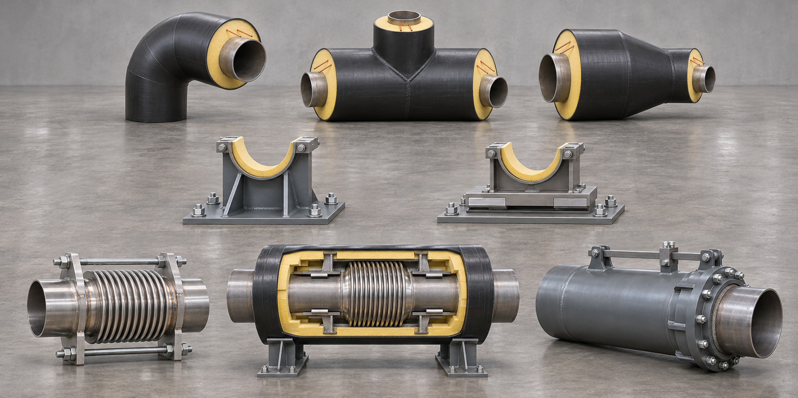

Геометрия и движение
Трасса не только идёт вперёд: она поворачивает, ветвится, фиксируется и удлиняется
Фасонная деталь задаёт геометрию. Опора задаёт границы движения. Компенсатор принимает расчётное перемещение. Один элемент без двух других нельзя подбирать по фото.

Фасонные изделия
| Изделие | Что делает | Что уточнить |
|---|---|---|
| Отвод | Меняет направление. | Диаметр/стенка, угол, радиус/плечо, изоляция. |
| Тройник | Создаёт ответвление. | Проход и отвод, их стенки, ориентация, усиление. |
| Переход | Меняет диаметр. | Оба диаметра/стенки, длина, концентричность. |
| Z-образный элемент | Создаёт геометрическое смещение. | Чертёж с длинами плеч и ориентацией. |
Опоры — часть расчётной схемы
Неподвижная опора делит трассу на расчётные участки и передаёт усилия. Скользящая/направляющая опора удерживает вес и задаёт допустимое направление движения. Менять тип опоры без пересчёта нельзя.
Четыре разных запроса на компенсацию
| Группа | Когда рассматривают | Критично |
|---|---|---|
| Сильфонный | Для заданного осевого, сдвигового или углового перемещения. | Ход, давление, температура, среда, циклы, присоединение. |
| Резиновый | Для вибрации/перемещений в совместимой среде. | Химическая совместимость, вакуум, температура, тяги. |
| СКУ в ППУ | Когда компенсатор должен быть частью изолированной трассы. | Вся схема ППУ, опоры, предварительная растяжка, СОДК. |
| Сальниковый | Для осевого хода при допустимом обслуживании уплотнения. | Доступ к сальнику, осевой ход, усилия, среда. |
Минимум для инженера
- Схема трассы и место узла; опоры и их расстояния.
- Расчётное перемещение по каждой оси, если оно есть в проекте.
- Диаметр, стенка, давление, температура, среда, присоединения.
- Для ППУ: тип изоляции, оболочка, СОДК и комплектность стыков.
Менеджер не расставляет опоры и не выбирает ход компенсатора. Он выявляет исходные данные и передаёт их на расчёт.
Продуктовые границы: каталог ТИК. Общая терминология: база Saverhot.